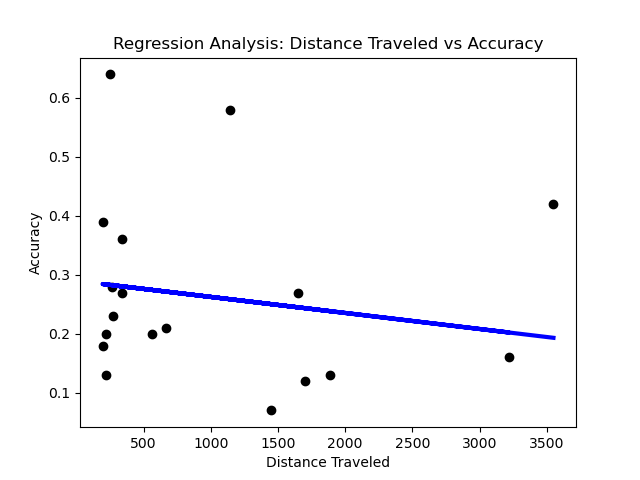

Welcome to our Fortnite data analysis journey, where we delve into the intricate realm of Fortnite statistics. In the ever-evolving landscape of competitive gaming, understanding player performance is crucial. Our exploration focuses on a specific aspect: the impact of distance traveled during a match on a player's likelihood of success. This analysis stems from the recognition that in Fortnite, strategic decisions, including movement patterns, can significantly influence a player's fate in the game.
Similar to the challenges faced by students during a hectic registration period, where course availability can shape the academic journey, Fortnite players encounter uncertainties about their in-game choices affecting their performance and outcomes. By drawing parallels with real-world scenarios, we aim to shed light on the importance of data analysis in unraveling patterns and optimizing decision-making.
As we embark on this analytical expedition, we encourage you to ponder how data science can be a valuable tool in deciphering complex phenomena, be it academic challenges or virtual battles. Just as petitions and letters prompted change in the academic realm, our analysis seeks to uncover insights that may contribute to an enhanced understanding of Fortnite dynamics and strategies.
Before diving into the analysis, let's explore the foundational step of data gathering. While you may collect your own data using web scraping and crawling techniques, we'll outline the general process and provide examples for a comprehensive understanding.
Web Scraping: Web scraping involves extracting data directly from websites. In our context, Fortnite statistics can be obtained from online platforms providing such information. Python offers powerful libraries like BeautifulSoup and Scrapy to facilitate this process. Here's a snippet showcasing basic web scraping using BeautifulSoup:
import requests
from bs4 import BeautifulSoup
# Example URL for Fortnite statistics
url = 'https://fortnitetracker.com/'
# Send a GET request to the URL
response = requests.get(url)
# Parse the HTML content
soup = BeautifulSoup(response.text, 'html.parser')
# Extract relevant data
player_stats = soup.find('div', class_='player-stats')
APIs: Alternatively, you can leverage APIs (Application Programming Interfaces) provided by platforms offering Fortnite data. This method is more structured and reliable. For instance, the Fortnite API allows you to access a wide range of player statistics programmatically. Below is a simplified example using Python:
import requests
# Example Fortnite API endpoint
api_url = 'https://api.fortnitetracker.com/v1/profile/{platform}/{epic-nickname}'
# Set headers with your API key
headers = {'TRN-Api-Key': 'your-api-key'}
# Make a GET request to the API
response = requests.get(api_url, headers=headers)
# Extract relevant data from the response
player_data = response.json()
Whether through web scraping or APIs, understanding these data-gathering techniques empowers you to collect the necessary information for our subsequent analysis.
In many data science projects, the initial dataset may require cleaning and preprocessing to ensure its suitability for analysis. Common tasks include handling missing values, removing duplicates, and transforming data types.
Example Data Cleaning Code:
# Example: Handling missing values
df.dropna(inplace=True)
# Example: Removing duplicates
df.drop_duplicates(inplace=True)
# Example: Transforming data types
df['time_of_day'] = pd.to_datetime(df['time_of_day'])
For instance, if our Fortnite dataset had contained missing values in the "placement" column, we might need to decide whether to impute these values or exclude corresponding rows from our analysis.
Additionally, transforming categorical variables into numerical format or handling outliers are other aspects of preprocessing that can significantly impact the quality of the analysis.
Fortunately, in our specific case, the dataset is well-structured, and we don't need to perform any cleaning or preprocessing.
As we delve into the Fortnite data analysis, it's essential to acknowledge the ethical considerations surrounding data collection, analysis, and interpretation. Unintended consequences and biases can arise, potentially leading to misrepresentation. Let's explore key ethical principles and how to mitigate these issues:
1. Privacy Concerns: Fortnite statistics often involve personal information. Whether using web scraping or APIs, ensure compliance with data protection regulations. Always anonymize or aggregate data when possible to protect user privacy.
2. Bias and Fairness: Bias can unintentionally seep into your analysis, affecting the reliability of results. Be aware of demographic bias, especially when dealing with player demographics. Counteract bias by ensuring diverse and representative datasets.
3. Transparency: Clearly document your data sources, methodologies, and assumptions. Transparency builds trust with your audience and allows them to understand the limitations of your analysis.
4. Informed Consent: If collecting data directly from users, obtain informed consent. Clearly communicate the purpose of data collection and give users the option to opt out. Respect user choices regarding their data.
5. Mitigating Algorithmic Bias: If employing machine learning algorithms, be vigilant about algorithmic bias. Regularly audit and validate your models to ensure fair and unbiased outcomes. Adjust algorithms if necessary to address any identified biases.
By embracing these ethical principles, we aim to conduct a responsible and impactful analysis of Fortnite data. Let's move forward with a commitment to integrity and fairness.
In this analysis, we aim to test the belief that looting up (collecting items and gear) during a Fortnite match leads to better accuracy compared to dropping hot (landing in highly populated areas for early combat). Understanding the impact of looting strategies on accuracy can provide valuable insights for players' decision-making.
We chose "Distance Traveled" as the independent variable (X) to represent the looting strategy. This variable encapsulates the player's movement across the map, providing a proxy for looting behavior. The dependent variable (y) is "Accuracy," indicating the player's precision in the match.
Let's utilize Linear Regression to model the relationship between distance traveled and accuracy. The following Python code demonstrates each step of the analysis, from loading the dataset to visualizing results.
We start by loading the Fortnite dataset into a Pandas DataFrame. This step is crucial as it sets the foundation for our analysis.
Dataset Loading Code:
# Load the dataset
df = pd.read_excel('Fortnite Statistics.xlsx')
pd.read_excel() function is employed to read data from an Excel file ('Fortnite Statistics.xlsx') and create a DataFrame (df).
head() to display the first few rows.
The independent variable (X) chosen is "Distance Traveled," representing the looting strategy. The dependent variable (y) is "Accuracy," indicating the player's precision in the match.
Variable Selection Code:
# Choose independent and dependent variables
X = df[['Distance Traveled']]
y = df['Accuracy']
We split the data into training and testing sets to assess how well our model performs on unseen data.
Data Splitting Code:
# Split the data into training and testing sets
X_train, X_test, y_train, y_test = train_test_split(X, y, test_size=0.2, random_state=42)
test_size=0.2 parameter indicates that 20% of the data will be used for testing. The random_state=42 ensures reproducibility by fixing the random seed.
We initialize a Linear Regression model, a fundamental algorithm in predictive modeling.
Model Initialization Code:
# Initialize the linear regression model
model = LinearRegression()
The model is trained using the training data, allowing it to learn the patterns and relationships.
Model Training Code:
# Train the model
model.fit(X_train, y_train)
Once trained, we use the model to make predictions on the test data.
Prediction Code:
# Make predictions on the test set
y_pred = model.predict(X_test)
We evaluate the model's performance using metrics such as Mean Absolute Error, Mean Squared Error, and Root Mean Squared Error.
Evaluation Code:
# Evaluate the model
print('Mean Absolute Error:', metrics.mean_absolute_error(y_test, y_pred))
print('Mean Squared Error:', metrics.mean_squared_error(y_test, y_pred))
print('Root Mean Squared Error:', metrics.mean_squared_error(y_test, y_pred, squared=False))
The results are visualized using a scatter plot with the actual placement values and a regression line predicted by our model.
Visualization Code:
# Visualize the results
plt.scatter(X_test, y_test, color='black')
plt.plot(X_test, y_pred, color='blue', linewidth=3)
plt.xlabel('Distance Traveled')
plt.ylabel('Accuracy')
plt.title('Regression Analysis: Distance Traveled vs Accuracy')
plt.show()